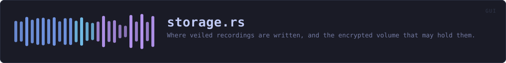

crates/veilvoice-gui/src/storage.rs
veilvoice-gui · 659 lines · read the source here · or on GitHub
Where veiled recordings are written, and the encrypted volume that may hold them.
Markers 82, 83 and 84. veilvoice_setup::volumes finds what is mounted; this decides what to do about it, remembers the answer, and refuses to write anywhere the user has not confirmed.
A destination, not a mode
With no destination chosen, a veiled recording lands beside the file it came from, which is what VeilVoice has always done. With one chosen, it lands in that directory instead, under the same name. That is the whole of the feature: the encryption belongs entirely to Cryptomator or VeraCrypt, and nothing here adds any of its own or claims to.
Why a chosen destination can still be refused
Because of VeraCrypt's hidden volumes, and the refusal is the point rather than an inconvenience. veilvoice_setup::volumes::Hidden carries the whole argument; the short version is that writing into the outer volume of a container that has a hidden one can destroy the hidden data, nothing can tell the two apart from outside, and so the only safe behaviour is to ask the person who knows and to write nothing until they have answered.
A destination whose question is unanswered is not silently downgraded to writing beside the source. It blocks the job and says why. Falling back quietly would put a veiled recording somewhere unencrypted while its owner believed it was in a vault, which is the exact failure this exists to prevent.
Marker 84: detection will fail, and that is planned for
Portable installs, custom mount points, a platform neither tool supports. The answer is not a silent fallback: it is a directory the user picks by hand, a declaration of what kind of volume it is, and the same confirmation before anything is written. A hand-picked destination is treated exactly like a detected one, including the hidden-volume question.
In plain words
Lets you send every veiled recording straight into a Cryptomator or VeraCrypt folder, instead of leaving it next to the original.
If VeilVoice cannot find your folders it asks you to point at one. Either way it asks, once, whether a VeraCrypt container has a hidden volume in it, and will not write anything until you answer, because writing into the wrong half of one of those can destroy what is hidden inside.
WHAT THIS FILE CONTAINS
659 lines defining 21 functions (18 public), 2 types and 0 constants. Everything below is read out of the source, so it cannot disagree with the code.
The types it owns.
struct Destinationline 55 · The chosen place for veiled output, if there is one.struct Storageline 188 · Everything the window shows about encrypted storage.
What happens when it runs. These are the ways in: public, and nothing else in this file calls them, so they are what an outside caller reaches first.
Destination::from_prefsline 66 · Rebuild a destination from what was written to the settings file.
reachesdefault,hidden_from_keyDestination::to_prefsline 83 · The three strings the settings file keeps.
reacheshidden_keyDestination::readyline 98 · Whether a job may start.Destination::blockedline 103 · Why a job may not start, for the button's tooltip.Destination::placeline 132 · Where a recording should be written, given where it would have gone.
reachesstill_mountedStorage::refreshline 228 · Look again at what is installed and mounted.Storage::foundline 241 · What was found at the last refresh.Storage::found_nothingline 247 · Whether anything was found at all, which decides whether marker 84's guided path is the main offer or the fallback.Storage::presentline 252 · Whether the chosen folder was there when this was last refreshed.Storage::take_hand_pickedline 257 · Take a folder the user picked by hand, if the picker has answered.Storage::pick_by_handline 267 · Start the folder picker for marker 84's guided path.Storage::chooseline 273 · Choose one of the detected volumes.Storage::clearline 281 · Go back to writing beside the source file.Storage::answer_hiddenline 287 · Answer the hidden-volume question for the chosen destination.Storage::hand_picked_toolline 294 · Which tool a hand-picked folder is being declared as.Storage::presenceline 299 · Whether either tool was detected, for the guided text.panelline 308 · The encrypted-storage panel, drawn on the security tab.
WHAT CALLS WHAT
The functions this file defines, and the calls between them. An edge means the callee's name appears, called, inside the caller's body. This is a syntactic reading, not a type-resolved one.
The same graph as Mermaid source
%%{init: {"theme":"base","themeVariables":{"background":"#1a1b26","primaryColor":"#1f2335","primaryTextColor":"#c0caf5","primaryBorderColor":"#7aa2f7","secondaryColor":"#16161e","tertiaryColor":"#16161e","lineColor":"#737aa2","textColor":"#c0caf5","mainBkg":"#1f2335","nodeBorder":"#7aa2f7","clusterBkg":"#16161e","clusterBorder":"#2f3549","fontFamily":"ui-monospace, SFMono-Regular, Consolas, monospace","fontSize":"14px"}}}%%
flowchart TD
n_from_prefs(["Destination::from_prefs<br/>line 66"])
n_to_prefs(["Destination::to_prefs<br/>line 83"])
n_ready(["Destination::ready<br/>line 98"])
n_blocked(["Destination::blocked<br/>line 103"])
n_place(["Destination::place<br/>line 132"])
n_still_mounted["Destination::still_mounted<br/>line 156"]
n_hidden_key["hidden_key<br/>line 164"]
n_hidden_from_key["hidden_from_key<br/>line 178"]
n_default["Storage::default<br/>line 210"]
n_refresh(["Storage::refresh<br/>line 228"])
n_found(["Storage::found<br/>line 241"])
n_found_nothing(["Storage::found_nothing<br/>line 247"])
n_present(["Storage::present<br/>line 252"])
n_take_hand_picked(["Storage::take_hand_picked<br/>line 257"])
n_pick_by_hand(["Storage::pick_by_hand<br/>line 267"])
n_choose(["Storage::choose<br/>line 273"])
n_clear(["Storage::clear<br/>line 281"])
n_answer_hidden(["Storage::answer_hidden<br/>line 287"])
n_hand_picked_tool(["Storage::hand_picked_tool<br/>line 294"])
n_presence(["Storage::presence<br/>line 299"])
n_panel(["panel<br/>line 308"])
n_from_prefs --> n_default
n_from_prefs --> n_hidden_from_key
n_place --> n_still_mounted
n_to_prefs --> n_hidden_key
click n_from_prefs href "https://github.com/tilas01/veilvoice/blob/main/crates/veilvoice-gui/src/storage.rs#L66" "open the source"
click n_to_prefs href "https://github.com/tilas01/veilvoice/blob/main/crates/veilvoice-gui/src/storage.rs#L83" "open the source"
click n_ready href "https://github.com/tilas01/veilvoice/blob/main/crates/veilvoice-gui/src/storage.rs#L98" "open the source"
click n_blocked href "https://github.com/tilas01/veilvoice/blob/main/crates/veilvoice-gui/src/storage.rs#L103" "open the source"
click n_place href "https://github.com/tilas01/veilvoice/blob/main/crates/veilvoice-gui/src/storage.rs#L132" "open the source"
click n_still_mounted href "https://github.com/tilas01/veilvoice/blob/main/crates/veilvoice-gui/src/storage.rs#L156" "open the source"
click n_hidden_key href "https://github.com/tilas01/veilvoice/blob/main/crates/veilvoice-gui/src/storage.rs#L164" "open the source"
click n_hidden_from_key href "https://github.com/tilas01/veilvoice/blob/main/crates/veilvoice-gui/src/storage.rs#L178" "open the source"
click n_default href "https://github.com/tilas01/veilvoice/blob/main/crates/veilvoice-gui/src/storage.rs#L210" "open the source"
click n_refresh href "https://github.com/tilas01/veilvoice/blob/main/crates/veilvoice-gui/src/storage.rs#L228" "open the source"
click n_found href "https://github.com/tilas01/veilvoice/blob/main/crates/veilvoice-gui/src/storage.rs#L241" "open the source"
click n_found_nothing href "https://github.com/tilas01/veilvoice/blob/main/crates/veilvoice-gui/src/storage.rs#L247" "open the source"
click n_present href "https://github.com/tilas01/veilvoice/blob/main/crates/veilvoice-gui/src/storage.rs#L252" "open the source"
click n_take_hand_picked href "https://github.com/tilas01/veilvoice/blob/main/crates/veilvoice-gui/src/storage.rs#L257" "open the source"
click n_pick_by_hand href "https://github.com/tilas01/veilvoice/blob/main/crates/veilvoice-gui/src/storage.rs#L267" "open the source"
click n_choose href "https://github.com/tilas01/veilvoice/blob/main/crates/veilvoice-gui/src/storage.rs#L273" "open the source"
click n_clear href "https://github.com/tilas01/veilvoice/blob/main/crates/veilvoice-gui/src/storage.rs#L281" "open the source"
click n_answer_hidden href "https://github.com/tilas01/veilvoice/blob/main/crates/veilvoice-gui/src/storage.rs#L287" "open the source"
click n_hand_picked_tool href "https://github.com/tilas01/veilvoice/blob/main/crates/veilvoice-gui/src/storage.rs#L294" "open the source"
click n_presence href "https://github.com/tilas01/veilvoice/blob/main/crates/veilvoice-gui/src/storage.rs#L299" "open the source"
click n_panel href "https://github.com/tilas01/veilvoice/blob/main/crates/veilvoice-gui/src/storage.rs#L308" "open the source"
classDef entry fill:#1f2335,stroke:#7aa2f7,color:#c0caf5
class n_from_prefs,n_to_prefs,n_ready,n_blocked,n_place,n_refresh,n_found,n_found_nothing,n_present,n_take_hand_picked,n_pick_by_hand,n_choose,n_clear,n_answer_hidden,n_hand_picked_tool,n_presence,n_panel entry
classDef api fill:#1f2335,stroke:#7dcfff,color:#c0caf5
class n_still_mounted api
classDef helper fill:#1f2335,stroke:#bb9af7,color:#c0caf5
class n_hidden_key,n_hidden_from_key,n_default helperThis site loads no third-party script, so it cannot run Mermaid; the diagram above is the same nodes and edges drawn by the generator instead. GitHub renders the source below directly.
ITEMS
| Item | Line | Documentation |
|---|---|---|
Destination pub struct | 55 | The chosen place for veiled output, if there is one. |
Destination::from_prefs pub fn | 66 | Rebuild a destination from what was written to the settings file. |
Destination::to_prefs pub fn | 83 | The three strings the settings file keeps. |
Destination::ready pub fn | 98 | Whether a job may start. |
Destination::blocked pub fn | 103 | Why a job may not start, for the button's tooltip. |
Destination::place pub fn | 132 | Where a recording should be written, given where it would have gone. |
Destination::still_mounted pub fn | 156 | Whether the volume is still mounted, judged against mounts. |
hidden_key fn | 164 | Stable settings-file spellings for Hidden. |
hidden_from_key fn | 178 | The reverse, defaulting to unanswered. |
Storage pub struct | 188 | Everything the window shows about encrypted storage. |
Storage::default fn | 210 | |
Storage::refresh pub fn | 228 | Look again at what is installed and mounted. |
Storage::found pub fn | 241 | What was found at the last refresh. |
Storage::found_nothing pub fn | 247 | Whether anything was found at all, which decides whether marker 84's guided path is the main offer or the fallback. |
Storage::present pub fn | 252 | Whether the chosen folder was there when this was last refreshed. |
Storage::take_hand_picked pub fn | 257 | Take a folder the user picked by hand, if the picker has answered. |
Storage::pick_by_hand pub fn | 267 | Start the folder picker for marker 84's guided path. |
Storage::choose pub fn | 273 | Choose one of the detected volumes. |
Storage::clear pub fn | 281 | Go back to writing beside the source file. |
Storage::answer_hidden pub fn | 287 | Answer the hidden-volume question for the chosen destination. |
Storage::hand_picked_tool pub fn | 294 | Which tool a hand-picked folder is being declared as. |
Storage::presence pub fn | 299 | Whether either tool was detected, for the guided text. |
panel pub fn | 308 | The encrypted-storage panel, drawn on the security tab. |